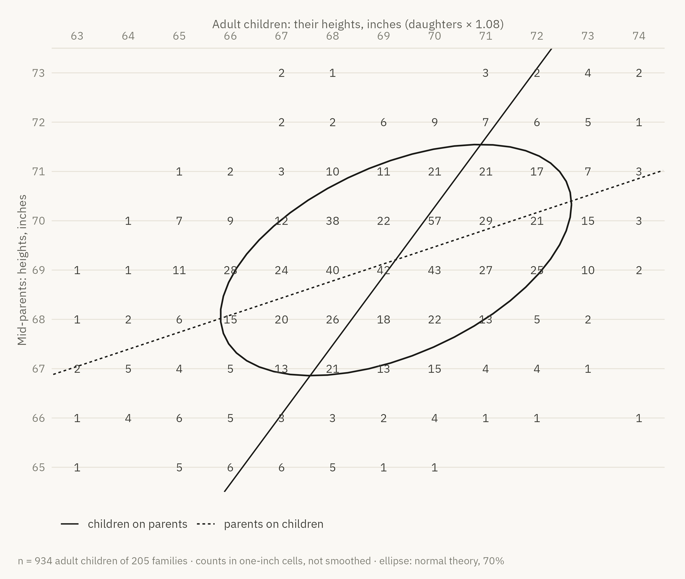

Show the R code
cells <- galton |>
mutate(child = round(height), parent = round(midparentHeight)) |>
count(child, parent) |>
filter(between(child, 63, 74), between(parent, 65, 73))
grid_x <- seq(62, 75, length.out = 50)
lines <- bind_rows(
tibble(line = "children on parents", parent = seq(64.5, 73.5, length.out = 50)) |>
mutate(child = predict(child_on_parent, tibble(midparentHeight = parent))),
tibble(line = "parents on children", child = grid_x) |>
mutate(parent = predict(parent_on_child, tibble(height = child)))) |>
filter(between(child, 62.5, 74.5), between(parent, 64.5, 73.5))
recreation <- ggplot(cells, aes(child, parent)) +
stat_ellipse(data = galton, aes(height, midparentHeight), level = .7,
colour = p$ink, linewidth = .6) +
geom_line(data = lines, aes(group = line, linetype = line), colour = p$ink,
linewidth = .5) +
geom_text(aes(label = n), size = 3.2, family = dsvar_font(), colour = p$ink_2) +
scale_x_continuous(position = "top", breaks = 63:74) +
scale_y_continuous(breaks = 65:73) +
scale_linetype_manual(values = c("solid", "22"), name = NULL) +
coord_cartesian(xlim = c(62.5, 74.5), ylim = c(64.5, 73.5), expand = FALSE) +
labs(x = "Adult children: their heights, inches (daughters × 1.08)",
y = "Mid-parents: heights, inches",
caption = "n = 934 adult children of 205 families · counts in one-inch cells, not smoothed · ellipse: normal theory, 70%") +
theme(panel.grid.major = element_line(colour = p$hairline), legend.position = "bottom")
recreation